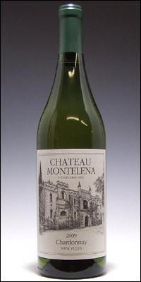

| これだからワインは素晴らしい！！: これ一冊であなたもワイン通！！ワインに絡む面白いお話が満載！！ | |
| 岡本隆裕 | |
| (2014) | |
これだからワインは素晴らしい!!
・これ一冊で今日からあなたもワイン通!!
・すっと読めて頭に入るワインの入門書
・ワインに絡む面白いお話が満載!!
米国カリフォルニア州ナパの ロバート・モンダヴィ ワイナリー
ナパヴァレーの風景
はじめに
日本でも、最近は、ワインが以前より身近な存在になりつつあり、たとえばスーパーでも、わざわざ成城石井とか軽井沢つるや等へ足を運ばなくとも、ワインの品揃えが豊富なところが増えてきました。
そして、フランス産や米国産のみならず、イタリア、スペインやチリ、豪州、南ア等から良質のワインが数多く入ってきていて、廉価なものも多く、手軽に楽しめるようになってきています。
例えば筆者は、ワインのディスカウントショップへ行って格安のシャブリやロバートモンダヴィとかを買いますが、同時に、近所のスーパーで例えば豪州のジェイコブス・クリークが９００円で置いていると迷わず買ったりしております（こういう風に、あちらこちらで格安のワインを見つけるのも、ワインの楽しみのひとつです）。
しかし、それでも、ビール、日本酒や焼酎などに比べて、ワインは日本人にとり馴染みが薄く、選び方、開栓の仕方、飲み方等で面倒に感じ敬遠してしまう人が多いのが実情です。
そこで、この本は、ワインをもっと身近に、手軽に感じる人が増えることを目的に、ワインについての基本の全てを、興味深い話を交えながら、なるべく簡潔に、かつ平易に解説してみました。
特に、価格的にも欧州ワインよりも手軽に触れる機会が多くなった米国カリフォルニアを始め、豪州、チリ、アルゼンチン、南ア等のワインに、よりスポットを当ててみました。
従い、本書は、ワインについての、いわば初心者の方を対象とする入門書ですので、更なる詳細については、各分野の専門書を参考にされることをお奨めします。
本書を通じて、１人でも多くの方がワイン党の仲間となられて、ワインの素晴らしさを堪能されることを願っています。
ナパ・ヴァレーを走るワイントレインの車窓より
第一章 ワインを楽しむには
１．肩肘張らずに先ずは実践
― 即ち何でも飲んでみる
ワインは人類が初めて出会ったアルコールであると言われている。
人類が古来より食料として保存していたブドウがつぶれて、果汁が発酵し、アルコールを含む液体となって、それを飲んだことが始まりらしい。だから、古代エジプトの壁画や、旧約聖書において既にワインは登場している。
現在、世界中で収穫されるブドウの75％はワイン用であり、栽培面積は約８００万haに及ぶ。
因みに、世界一のワイン生産国はイタリアで、全世界の２割強を占め、20万種類のラベル（銘柄）が存在する。全世界のワインの銘柄数は数十万種類に上ると言われている。
（日本酒の銘柄数は約１万種類である。）
ワインはこのような歴史と拡がりがあり、欧米人は毎日のように食卓で（水を飲むがごとく）ワインを飲んでいるのだが、残念ながら長らく Far Eastと位置付けられていた日本に住む我々日本人にとっては、縁遠い対象であった。
従い、ワインに親しむには、先ずは、四の五の言わずに、どのワインでも良いから飲んでみることである。
白であれ赤であれ、いろんなワインを余計なことを考えずに飲んでいくに連れて、自分が美味しい（つまり自分に合う）ワインが必ず見つかる。（万人に合うワインというのはないので、他の人には美味しくても自分に合うとは限らない。だから、自分に合うワインを見つけることが大事。）
そうなると、ワインに興味が湧いてきて、自然とワインに関する様々な知識が頭に入って来る。 やがて、ソムリエ、ソムリエールのいる本格的レストランにて、ワインリストからワインを選び、同伴者のためにテイスティングをするまでになってくる。
ここまで来ると、ワインに関する自信みたいなものが出てきて、人前でワインの講釈の一つもしたくなり、誰かと一緒にワインを飲むことが人生の楽しみの一つとなってくるのである。
２．料理に合うワインを選ぶということについて
（１） よく聞きかじりで「肉なら赤ワインで、魚介類には白ワイン、というのがルールだ」と勝手に決めている人が多い。
しかし、白でもフルボディ系なら肉料理に合うし、赤でもライトボディ系であれば魚介類料理に合うものがあるので、単にワインの色だけで決め打ちするのは危うい。
＊００７映画「ロシアより愛をこめて」の中で、オリエント急行の食堂車で肉料理を注文した時に、英国連絡員に化けたロシアの悪玉が白ワインを飲むのをみた主人公ボンドが、「赤でなく白を飲むのはおかしい」として嘘を見抜いたというシーンが登場するのだが、これなども必ずしも正しいとは言えない。
最も大事なことは、自分が美味しいと思えるワインを選ぶことである。赤ワインが嫌いな人が、肉料理だからといって嫌いな赤を無理やり飲むほど馬鹿げたことはない。
（２） ただ、一般的には、淡白な味の料理にはライトなさっぱりしたワインが合い、濃厚な料理にはフルボディ系のコクのあるワインが合う、と言える。
その意味で、次のようなことを参考にしてワインを選ばれるのが分かりやすい。
・前菜 ： 一般的に白ワイン
・刺身・てんぷら・生ガキ等： ドライ(辛口)系白ワイン
・ホワイトソース系料理 ： フルボディ系白ワイン
・肉料理（薄い味） ： ライトボディ系赤ワイン
・肉料理（濃い味） ： フルボディ系赤ワイン
３．ワインのヴィンテージ（ブドウを収穫した年）について
（１）ヴィンテージとは
ワインのボトルに表示されている年であり、ブドウを収穫した年を表している。
ワインはブドウと酵母だけでできる（ビールなどと違い水を加えない）ので、ブドウの出来具合が大きく味・香りに影響する。
ブドウの出来具合を良くするには、
― 晴天日が多いこと
(日当たりが良い年のワインは長期保存に向く)
― 昼夜および一年通しての寒暖差が大きいこと
― 雨が少ないこと
(開花・収穫時に雨が降ったり、霜がおりたりするのは悪い影響を与える）
などが必要であるので、年により、また場所により、出来具合の差が出る。
（２）ヴィンテージチャートとは
各ワイン産地ごとに、各収穫年のブドウの出来具合を取り纏めた表のこと。
いろんな機関がチャートを作っているが、フランスのワインバイヤー向けガイド等により、ボルドー産ワインおよびブルゴーニュ産ワインにつき、収穫年毎の評価（満点１００ポイント）を見てみると、１９８０年以降で、91ポイント以上の当たり年となっているのは、次の通りである。
＜ボルドーワイン＞
（１９８０年代は１９８２年、１９８３年、１９８６年、１９８８年、１９８９年が何れも90ポイントで最高）
１９９０年 95ポイント（非常に良い）
１９９８年 91 （とても良い）
２０００年 95 （非常に良い）
２００１年 91 （とても良い）
２００５年 97 （非常に良い）
＜ブルゴーニュワイン＞
（１９８０年代での最高は、１９８５年の88ポイント、次いで１９８７年の87ポイント）
１９９０年 91ポイント（とても良い）
１９９２年 92 （とても良い）
２００２年 92 （とても良い）
２００５年 95 （非常に良い）
従い、この表によれば、ボルドーワインについては、１９９０年、２０００年、２００５年が飛びぬけた当たり年ということになる。
尚、それ以降では、２００９年が飛びぬけて良いとされている。
（３）ヴィンテージチャートに頼り過ぎるのは危険
① 赤ワインが主に対象であるということ
ヴィンテージワインの対象は通常 赤ワインである。
(白ワインは一般的に長期熟成するものではないので、ヴィンテージワインとしては多くは存在しない。)
② ヴィンテージチャートは絶対ではない
ヴィンテージチャートは、あくまで目安であり、天候不順でポイント数が低い年であっても、良いワインを造る生産者も多いし、また、同じボルドー地方であっても、その中の各地区によって出来具合が違う。
従い、ヴィンテージチャートを盲目的に崇拝するのは危険である。
③ 毎日手軽に飲むデイリーワインにはヴィンテージは気にしなくてよい
手頃な価格で買えるワインを数多く提供している米国カリフォルニア、チリ、オーストラリア、ニュージーランド等（所謂、"ニューワールド"と称せられる各国）の産地は、気候が総じて安定していて、ほぼ毎年が当たり年である。
従い、これらの国の産地で、かつ廉価なワインボトルを購入する限りにおいては、ヴィンテージはあまり気にする必要がない。
４．ボージョレ・ヌーボーについて
＊日本でよく「ボジョレー・ヌーボー」と記されるが、これでは海外では通じない。 本書では、フランス語「Beaujolais Nouveau」の発音に近い「ボージョレ・ヌーボー」と記す。
（１）「ボージョレ・ヌーボー」とは、フランス・ブルゴーニュ地方のボージョレ地区で、その年の夏に収穫したガメイ(ブドウ品種)から造られる新酒（ヌーボー）のこと。
毎年、11月第３木曜が解禁日となっている。
（２）通常のワイン造りでは、収穫したブドウを破砕して発酵させる。
これに対し、ボージョレ・ヌーボーは、マセラシオン・カルボニック（炭酸ガス浸潤法）という醸造方法が用いられる。
― ブドウを破砕せずに、タンクに上から入れていく
→下のブドウが重さでつぶれ自然に発酵が始まる
→炭酸ガスが生成され、タンク全体に充満
→酵素による発酵中に炭酸ガスによって過度な酸化が防止
→まろやかでフレッシュなワインに仕上がる。
（３）従い、ボージョレ・ヌーボーは、渋みが殆どなく、フルーティ、軽快、フレッシュであるのが特徴。
通常のワインは、冷やし過ぎるとタンニンの渋みが強くなり飲みにくくなるが、ボージョレ・ヌーボーは元々渋みが出にくい造り方なので、冷やした方がすっきりした味を楽しめる。
（４）ボージョレ・ヌーボーは、通常のワインとは違って、熟成されると味が落ちる。
従い、普通は長期保存はせずに２～３か月内に飲むのが良いとされる。
（５）日本人はボージョレ・ヌーボーが大好き
２０１２年における日本のボージョレ・ヌーボー輸入量は６・６万ヘクトリッター（８８０万本）であり、ダントツの世界一（全生産量の実に４分の１）。 因みに、第２位は米国だが、たったの１・６万ヘクトリッター（２２０万本）だそうである。
日本人がボージョレ・ヌーボー好きな理由として次の点が挙げられている。
・初物好き、「世界一」のものに飛びつく。
解禁日が決まっている中で、時差の関係から、日本は世界で最も早いタイミングで飲める。
・ワインは欧米に比して日常的には飲んでない中で、フレッシュ・すっきりタイプで、かつ比較的廉価なボージョレは、日本人にとってとっつき易い。
・毎年解禁日前後に、日本中で宣伝され、マスコミ・企業が煽る。（本場フランスでさえ、至る所で宣伝されるわけではない）
５．よもやま話 ― 東京芸術劇場での一杯の白ワイン
先日、「秋川雅史を迎えての飯森範親指揮 東京交響楽団コンサート」を聞きに、池袋の東京芸術劇場へ足を運んだ。
前半のプログラムは東京交響楽団によるモーツァルトの「歌劇ドン・ジョヴァンニ序曲」と「交響曲第38番プラハ」、後半は、同楽団をバックに秋川雅史による「ビゼー歌劇カルメンの花の歌」、「滝廉太郎 荒城の月」、「クルティス 泣かないお前」、「新井満 千の風になって」の独唱。
残響効果抜群の同劇場における正指揮者による同楽団の演奏も見事であったが、何より、筆者も好きなテノール秋川による独唱は、相変わらずの迫力と奥行きがあって素晴らしいものであった。
特に、イタリア・カンツォーネの「泣かないお前」を朗々と情感たっぷりに、かつダイナミックに歌い終えた際は、最後の「千の風になって」と同様、ブラボーの声が飛び交い、割れんばかりの拍手が止まなかった。
(秋川がイタリア滞在時代、各地でこのカンツォーネを歌うと、何せ情熱の国なので、感激した聴衆のイタリア婦人連が舞台に駆け寄り抱きついてきたそうである。）
途中、正指揮者の飯森と秋川のトークがあったが、その中で、ドイツ滞在が長かった飯森が「ドイツ人奏者は集合時間を守るがイタリア人奏者は大体遅れてきていた。」と秋川に振った際、秋川によれば、「そうなんですよ。イタリア人は何事にもファジーで、集合時間には遅れる、電車も時刻表通りには来ない。何と、テレビ番組ですら、時間表通りには放送されずに、平気で １時間とか１時間半とか遅れて始まるんですよ。」と言っていたのが、いかにもイタリア人気質を捉えていて印象に残っている。
これらの上質な演奏や独唱に大いに気分を良くし、白ワインが飲みたくなって劇場ロビーのバーに立ち寄った。
そこで出してくれたのが、イタリア・ピエモンテ(白ワインの有名産地）のシャドネー。
雨上がりの気候のせいもあって、ロビーは少し蒸し暑かったのだが、よく冷やされたグラスに注ぎこまれた、このシャドネーを口に含んだところ、フルーティな香りとフレッシュな酸味とが鼻や舌を気持ちよく刺激し、爽快な飲み心地をもたらしてくれた。
コンサートに感激し、かつ、一杯のグラスワインに感激する。
人生には、こういう場面があるので、やめられない。
追記：秋川に関する話題をもう一つ。
最近のカラオケ店での最新カラオケ機器を使うと、歌った歌についての日本全国での番付順位も表示される由。
秋川本人が過日、某カラオケ店で「千の風になって」を試しに熱唱してみたところ、結果は何と、全国で第51位だったとのこと。
本人は「自分の十八番なのに、自分より上に50人も上手な人が居るらしいんですよ。」と嘆いていた。
第２章 ワインの歴史を知ろう
１．ワインの起源（メソポタミア）
チグリス川とユーフラテス川に挟まれた地域（現在のイラク）で生まれた世界最初の文明と言われるメソポタミア文明の、紀元前４０００年頃の遺跡から、ブドウの木や、果汁搾り用の石臼が発見されている。また、紀元前４０００～５０００年頃の出来事を記したシュメール人による「ギルガメッシュ叙事詩」にも、ワインに関する記載がある。
紀元前３０００～１５００年頃に栄えたエジプト王朝のピラミッド壁画に、ワイン造りの様子が描かれている。
２．ヨーロッパへの伝播
メソポタミアで始まったワイン造りは、紀元前１５００年頃にエーゲ海の島々へ、紀元前１０００年頃に古代ギリシャに伝わった。
そして、紀元前２００年頃に古代ローマへ伝播。その後、ジュリアス・シーザー将軍の活躍により紀元前58～51年にガリアを征服する等して、ローマ帝国がヨーロッパに拡大するにつれ、占領地域にブドウ畑を作りワイン造りを行ったことで、ワインがヨーロッパ全域に広がっていった。
即ち、シーザーにより、ローヌ河流域、ブルゴーニュ、シャンパーニュ、ロワールに拡大し、クラッスス（執政の一人）により、ボルドー、南西地方に広がっていったのである。
３．南米、南ア、豪州等への伝播
ヨーロッパは15世紀に大航海時代を迎えた。
16世紀に入り、スペインによって征服された南米チリにワインが伝わった。
同時期にスペイン人神父がアルゼンチンにワインを伝えた。
また、17世紀半ばに南アフリカに、18世紀末にはオーストラリアにワイン醸造がもたらされた。
４．米国への伝播
米国カリフォルニア州ナパ・ヴァリー
１７００年代後半に、スペイン人の教会を中心に僧侶によりカリフォルニア州にワインが導入されてワイン造りが本格化した。（それまでにも、例えば、１６００年代初めのメイ・フラワー号の移民により、アメリカ東部にて野生ブドウからワインを造った等の散発的動きは見られた。）
そして、１８６８年から起きたゴールドラッシュによりカリフォルニアの人口が急増するにつれて、ワインの生産量が大きく伸びていった。
現在、カリフォルニア州だけで、全米ワイン生産量の９割を占めるまでに至っている。
５．よもやま話 ― ワインに関連した数字について
＊気の置けない友人・知人との楽しいワインのひとときなどでの話題として、次のようなことを話されると相手が関心を示されることでしょう。
（１）１トンのブドウからは、約７２０本、即ち60ケース（１ケースで12本）のワインが造られる。
（２）ワインの樽１個には、およそ20ケース分（２４０本）のワインを貯蔵することができる。これは、グラスで１、２００杯分（１本のワインボトルはグラス５杯分、グラス１杯は１５０ｃｃとして）に相当する。
（３）１本のブドウの木から、ボトル４本～６本分（グラスで20～30杯分）のワインが造られる。
（４）ボトル１本のワインには、約１・３キロの葡萄が必要で、グラス１杯のワインには、２３０グラムの葡萄が必要。
（５）１本のブドウの木には、約15～45房の葡萄が実る。
（６）１エーカー（０・４ヘクタール）の土地には、約９００本から１３００本のブドウが植えられている。
第３章 ワインを美味しく飲むために
樽で熟成中のワイン
１．ワインの保存
ワインは繊細な酒であり、温度、湿度、空気、光、振動等につき次のような注意を払う必要がある。
① 温度
一般的には12～15℃での保存が理想とされる。
高温であると酸化が進んでしまうし、あまり低温であると熟成が進まない。
ただし、白ワインの中で、酸味が主体のものについては、10℃前後に
冷やした方が、味が締まって爽快感が増す。
一方で、赤ワインの中で、渋みの強いフルボディ（濃厚でコクのあるもの）については16～18℃位の方が香りがたち余韻も長くなる。
つまりフルボディタイプならば、日本でも春秋なら常温で美味しく飲める。
② 湿度
60～80％が理想とされる。
湿度が少ないとコルクが収縮して中に空気が入ってしまう。
ボトルを寝かせることも、コルクに適度な湿り気を与えて乾燥による空気混入を防ぐことにある。
（ただし最近増えてきたスクリューキャップであれば関係ない）
③ 空気
一旦コルクを抜いたワインについては早く飲まないと劣化する。
真空ポンプ式のワインストッパーを使用したとしても１週間程度で飲んでしまった方が良い。
ただし、ワインによっては、開栓後、暫くの間 空気に触れさせた方が、味や香りが一層引き立つ。
④ 光
紫外線（日光のみならず、一部の蛍光灯も）を避けること。
⑤ 振動
澱が沈殿しているワインは拡散しないよう、また、炭酸ガス入りワインは破損を防ぐべく、振動を避ける。
上記を踏まえると、ベストは「ワインセラー」を購入して保存しておくことである。
＊失敗談：
筆者がサンフランシスコでの生活を終えて帰国する際に、清水の舞台から飛び降りるつもりで買った数本の「OPUS ONE」を含む、20本ほどのワインを持って帰ったのだが、当時は専用ワインセラーが自宅になかったため、一部を冷蔵後に入れ、残りは台所脇に寝かしておいた。
猛暑の夏が過ぎ、年の暮れの祝い事の際に開けてみると、OPUS ONEを含む多くのワインがすっかりダメになっていた。
そのことがあって以来、ワインセラーを愛用している。
２．ワイン用のグラス
多くの赤ワインがそうであるが、タンニンの多いワインは酸化しにくく香りがたちにくいので、空気に触れる部分の大きいグラスが適している。
一方、白ワインは冷やして飲むことが多いので、飲んでいるうちに温度が上がらないように、小ぶりで細長いグラスが適している。
尚、グラスのボウル部分に指紋がつかないように、また、手の体温がワインに伝わらないよう、ワイン用グラスには指で保持できる脚がついている。
初めてワイン用グラスを購入する場合は、先ずは チューリップ型グラスがお奨めである。グラスの中に香りがこもり易いので、ワインの香りを手軽に楽しむことができる。
３．ワインを開ける
最近はスクリューキャップが増えてきて手軽に開けられるボトルも多くなってきているが、多くの高級ワインは現在でもコルク栓である。
このコルク抜き用として、簡易なＴ字型からプロ用のソムリエナイフまで様々なものがあるが、一般に使用されているのはつばさ型（ウィングのように両サイドが開くタイプ）である。
尚、ソムリエナイフも、コルクに突き刺す際に指を添えるなどして、コルクの中心から真っ直ぐに差し込む要領をつかむと、うまく抜くことができる。
４．デキャンタージュ
「デキャンタージュ」とは、ワインをボトルから直接ワイングラスに注がずに、一旦、デキャンタというガラス製容器に移すことを言う。
目的は、古いワインについては、沈殿している澱を取り除くため、まだ若いワインについては、香りが閉じているので空気に触れさせて開かせるためである。
（従い、デキャンタージュが必要でない場合も多い）
５．ホストテイスティング
レストランでホスト（ゲストを連れてきた人）が、注文したワインの状態を確認するために次の一連の行為を行うことをホストテイスティングと言う。
目的は、「そのホストが連れてきた大切なゲストに対して、より良いサービスをすること」にある。
従い、テイスティングの結果、問題なければ「良いですね」とか「大丈夫です」とかの返事をその店のソムリエにすることとなり、もし判然としないのであれば、ソムリエに聞いてみるか、お任せすれば良い。
（専任ソムリエを抱えているようなレストランであれば、殆どの場合は全く問題ないのだが、何せワインばかりはどんな有名銘柄でも栓を開けてみるまで状態が分からないので、ごくたまに、品質が明らかに劣化している場合もある。そういう明らかなケースにおいては、ソムリエにその場で相談すれば、大概快く代えてくれる筈である。
筆者も過去に２度ほど経験した。）
① 注文したワインで間違いないかの確認
② コルクの状態や匂いの確認
（例えば、コルクがスカスカ状態で下部だけでなく上部まで完全にワインが染み透って酸化が進んでしまったりしていないか等）
③ ワインの色具合や香りを確認
（健全度は、香りでほぼ確認できる）
④ ワインの味わいを確認
＊劣化したワインには次のような特徴がある：
（ア）酸化臭
酸化が過剰に進んだことによる不快な酸化臭
（イ）コルク臭
カビ臭や湿った段ボールの如き臭い。
コルク製造時の汚染や、カビが反応して生成される臭い。
（ウ）熱や紫外線による劣化
不快な匂い、焦げたような臭い、ムレたような臭い等。
６．ワインの色について
赤ワインの原料は黒ブドウ。その果肉は白系であるが、果汁をアルコール発酵する際に、果皮・種子も一緒に漬けることにより、赤い色素（アントシアニン）が出てきて赤ワインの色になる。
一方、白ワインの原料は基本的に白ブドウで、かつ、果皮・種子を入れずに果汁のみを発酵させるので白ワインの色となる。
７．ワインの香りについて
最も多種多様な語彙でもって表現されることが多い（従い、表現の仕方も難しく、表現された語彙を正確に理解することも難しい）のがワインの香りについてである。
ワインをグラスに注いだ際に、すぐ出てくる香りはブドウ果実の品種によるものでアロマと呼ばれる。
次にグラスの中で回す（スワリング）ことによって生じてくる香りが、ワインの熟成からくる香りである。
具体的な香りについては、次の諸点の夫々につき判断され表現されると言われている。
・香りの豊かさの程度
・香りの爽やかさ(フレッシュさ)や上品さの程度
・フルーツの香りの種類と程度
・花、植物、森林の香りの種類と程度
・その他の香り（ミネラル等）の有無と程度
・濃縮感の程度
８．ワインの味について
ワインの味を表現する際、一般的に、白ワインについては酸味の程度、赤ワインについては渋みの程度が絡んでくる。
このことを含めて、ワインの味の要素としては次のものが挙げられる。
① 酸味： 酒石酸・りんご酸が白ワインの主成分となり、シャープさ・爽快さを左右する。
乳酸は赤ワインに含まれ、まろやかさに繋がる。
② 辛口・甘口：
糖分の程度による。アルコール度が高いワインはその分、糖度が低くなって辛口となる。
ただ、糖分が多くても、酸味・苦味が強い場合は辛口(ドライ)と感じるケースもある。
③ 渋み： タンニンによるもので、赤ワインに含まれる。
同様に、苦味もタンニン等による。
④ コク： ワインの味の各要素を総合して表され、ワインの厚みやふくらみを意味する。
軽いものから濃厚なものへ、ライトボディ、ミディアムボディ、フルボディという風に表現される。
その他に、飲んだあとの味わいとしての「余韻の程度」、総合しての「味わいの複雑さの程度」も表現されることが多い。
第四章 ワインに強くなるための基本
―先ずは、主なブドウ品種を理解しよう
ワインリストを常時お客に提供できるようなレストランであれば、フレンチであれ、イタリアンであれ、ステーキ店であれ、日本料理店であれ、リストの中に必ずと言っていいほど、Cabernet Sauvignon（キャバネー・ソーヴィニョン）とか、Chardonnay（シャドネー）といった文字が並んでいる。
しかしながら、これらがブドウの品種を示す言葉であると分かっていたとしても、どのような品種であり、何色のワインとなり、どんな特徴を有するのか、といったことを一通り理解していないと、リストからワインを選びようがない。（お店のソムリエないしソムリエールに全て任せてしまう手もあるが、それだといつまで経ってもワインのことが分からず、ワインの楽しみを手に入れることができない。）
特に、大事な人や、家族を連れてのホスト役となって席に着いた場合には、ワイン選びやテイスティングが、料理以上にホストの大事な役目となってくるので尚更のことである。
本章では、大きく赤ワイン用と白ワイン用に分けて、夫々の主だったブドウ品種につき、筆者の実体験やコメントも交えつつ、なるべく分かり易く記載することとした。
（Ⅰ）赤ワイン用ブドウ品種の主なものと解説
１．キャバネー・ソーヴィニョン
＊注：日本語の多くのワイン本で「カベルネ」と書かれているが、これだと海外では全く通じない。
本書は、実用の観点から、Cabernetの実際の発音に近い「キャバネー」と記載する。
ブドウ： キャバネー・ソーヴィニョン
（１）キャバネー・ソーヴィニョンは赤ワイン用ブドウ品種として最も有名。
筆者の好みで言えば、赤ワインはキャバネー・ソーヴィニョンかサンジョベーゼ（キャンティ・クラシコ）、白ワインは先ずはシャドネー。 何れも大人の味で、飲みつけるにつれて、はまる。
筆者の場合、キャバネー・ソーヴィニョンを頼む際は、大体において、ボルドー産か、カリフォルニアのナパ・ソノマ産のボトルをオーダーすることが多い。
ただし、既に記したように、好みは人により多種多様であるので、筆者の弁にあまり引きずられることなく、読者はいろんな種類のワインにチャレンジしながら、自分好みのものを見つけられることをお奨めする。
何故なら、自分に合う味・香りを求めて様々なワインボトルにチャレンジすること、そのものがワインの醍醐味であるから。
このキャバネー・ソーヴィニョンの生産は、先ず、フランス・ボルドー地方から始まった。
このブドウは皮が厚く、作られるワインはタンニンを多く含むので、長い熟成に耐える。最高級のものは10年から数十年かけて風味が熟成し、飲み頃に達する。
ワインの特徴としては、濃い色あい、酸味と渋みのバランスが良い、豊かなタンニンであり、香りが豊かで後味が深い。
（２）主な産地
１．フランスのボルドー
ボルドーの赤ワインはキャバネーが主。
最高級のボルドーワインを生み出す。
２． 米国カリフォルニア州のナパおよびソノマ
ボルドーに次ぐ世界的なキャバネーの産地。
３．イタリアのトスカーナ
４．その他
スペイン、チリ、オーストラリアなど世界各地で生産。
２．メルロー
（１）キャバネー・ソーヴィニョンと同じく、フランス・ボルドーを発祥とし、ボルドーを代表する赤ワイン。
キャバネーに比して、早熟で豊かな果実味。酸味やタンニンは強くなく、芳醇でまろやかな味わい。
（２）主な産地
１．フランスのボルドー
２．その他
米国のカリフォルニア州・ワシントン州、チリなど。
３．ピノ・ノワール
（１）フランス・ブルゴーニュ地方の代表的赤ワイン用品種。
キャバネー・ソーヴィニョンより明るい色合いと華やかな香り。
タンニンはやわらか。
（２）主な産地
１．フランスのブルゴーニュ
２．その他
他の欧州地域、米国、ニュージーランドなど
４．シラー
（１）フランス・ローヌ地方で古くから生産。
タンニン・酸味・渋みが強く重厚で凝縮された香り。
（２）主な産地
１．フランスのローヌ
２．オーストラリア
オーストラリアでは現在 シラーを最も多く栽培。
シラーズの名で有名。
３． その他
米国、南アなど。
５．サンジョベーゼ
（１）イタリアを代表する、同国で最も普及している赤ワイン用品種。
中でも、同国トスカーナ地方が主要産地でキャンティ地区やキャンティ・クラシコ地区が有名である。
味はフルーティで爽やかな酸味のものから重厚なものまで多様であり、また長期熟成にも向いている。
筆者は、前著「これだから海外は面白い!!」(AMAZON)にて詳細に記したが、サンフランシスコのノースビーチ（イタリア人街）に店を構える伝統的イタリア料理店バスタパスタに、２５０回以上も通い詰めたほどイタリア料理が好きで、必然的に、脂っこいイタリア料理との相性が抜群のキャンティ・クラシコやキャンティが大好きになった。 特に、キャンティ・クラシコ リザーブを飲みだしたら最後、人生の楽園に迷い込んだ如く、もう止まらなくなる。
従い、個人的には、赤ワインと言えば、キャバネー・ソーヴィニョンとサンジョベーゼ（キャンティ・クラシコ）とが、筆者の心の中で双璧をなす。
（２）主な産地
イタリアのトスカーナ地方（キャンティ、キャンティ・クラシコ）他
６．ジンファンデル
（１）主に米国カリフォルニアで栽培。
軽快な若飲みタイプ（ホワイトジンファンデル）から、長期熟成の個性的なものまで多様な味となる。親しみやすい味が多い。
（２）主な産地
米国のカリフォルニア州が主。
７．キャバネー・フラン
（１）キャバネー・ソーヴィニョンの異種。
フランスだけで世界の８割の生産量。
キャバネー・ソーヴィニョンに比して、タンニンが少なく、フルーティで爽やかな酸味。比較的早熟。
（２）主な産地
フランスのロワール地方やボルドー地方（サン・テミリオン）
８．マスカットベーリーＡ
（１）１９４０年日本生まれ。日本の赤ワイン用ブドウの中で最大の生産量を誇る。
川上善兵衛が、欧州系と米国系との交配により見つけ出した品種。
適度な渋みと軽やかな果実味を有し、口当たりの良いものが多い。
（２）主な産地
日本の山梨県、兵庫県、岡山県など。
９．よもやま話 ― イタリア料理とワイン
（弊著「これだから海外は面白い!!」から抜粋）
サンフランシスコ(ＳＦ)市内で、シーフード以外で良く行ったのは、ノースビーチ(イタリア人街）のイタリアンと、チャイナタウンのチャイニーズ、それに元ミス日本のおかみがやっていた、フィッシャマンズワーフにあった「東京スキヤキ」。
中でも、普段着でも入れてくれ、パスタの味と値段が大評判だったのが、ノースビーチの「バスタパスタ」というイタリアンだった。
ＳＦに赴任してすぐに親しくなったのが、Ｏ氏という「ＳＦの主」的日本人で、赴任早々、そのＯ氏に連れられて、昼休みに事務所から上りのケーブルカーに乗って向かったのが、バスタパスタ。
早目に着いたのにも拘わらず、雰囲気がカジュアルで入りやすいこともあるのか、店内は地元のアメリカ人やイタリア人と思しき連中でほぼ満員状態だった。
ところが、その店を仕切っていたピーターというマネジャーがＯ氏を見た途端、満面の笑顔を振りまきながら案内してくれたのが、店内の奥のコーナーで「RESERVED」の札が置いてあった特等席。我々２人は無論予約なんかしていなかったので、どうやらＯ氏はピーターお気に入りの上客であったらしい。
初めて連れていってくれた先で、いきなり最上の案内をされたことで、私もすっかり嬉しくなり、ピーターの薦めるままに頼んだのが、イタリア赤ワインでキャンティ・クラシコのボトル１本と、つまみにチキンレバー、メインにその店の看板料理との触れ込みの「スパゲッティ・バスタパスタ」。
脂っこい割に飽きのこないチキンレバーと、余分な油分を取り去る効果絶大で、いつまでもイタリア料理の味を引き立てるキャンティ・クラシコの組み合わせが絶妙であった。
ところが更にその上を行ったのが、スパゲッティ・バスタパスタ。
秘伝のクリームソースと、控えめの魚介類が、細くもなく太くもないスパゲッティに合されているだけの、割合にシンプルに見える１品なのだが、流石に店の看板料理と豪語するだけあった。それまでの人生で初めて出会った味であり、その一回ですっかりハマってしまった。
必然の成り行きというか、以来、その味に魅せられた私は、ＳＦにはるばるやってくる多種多様なゲストやら仲間やら家族やらを連れて、ほぼ毎週、週によっては２回以上、バスタパスタに足を運んだ。
やがて、連れていった日本人客が、帰国後あっちこっちに喧伝したこともあり、その話を聞いた別の顧客がＳＦに来るなり、自分も連れて行け、という。そういう訳で、その店を訪れる日本人客がどんどん増えていった。
暫くして、本社の幹部で時々ＳＦにも立ち寄るＰ氏が、東京から国際電話をかけてきて曰く、『俺のところに、ＳＦでお前にお世話になったというＳ氏がやってきて、バスタパスタのことをさんざ聞かされたが、俺はまだお前に連れて行ってもらってナイゾーーー。
そんなに良いところに、なんで俺を連れてイカナインダーーーー。』
実のところ、バスタパスタは背広ネクタイをして行く類の『エライさんが好む高級店』 ではないので、 それまで案内しなかっただけなのだが、わざわざ国際電話まで掛けてきて要望（？）されてはしようがない。
その後まもなくしてＳＦに到着したＰ氏を、早々にバスタパスタまで案内し、ピーター自らの丁重な段取りの結果、大満足してもらった次第。
４年ほど経ったある日に、Ｏ氏と共にその店に顔を出した途端、ピーターが、「Ｍｒオカモト、あなたとＯさんが一緒にこの店に来て以来、あなたが来た回数が２００回を超えたよ！ お蔭で日本人客も増えたし、来月から日本語のメニューを作るけどＯＫか？」と言うので、Ｏ氏と共に破顔しつつ快諾。
翌月二人でバスタパスタに行くと、ピーターが出来上がったばかりの日本語メニューを早速見せてくれた。 その内容は、ーーーー
元の英語メニューの中で、私がいつもオーダーしていた看板料理の「スパゲッティ バスタパスタ」が、出来上がった日本語メニューでは、何と、「スパゲッティ オカモト」と書かれてある。
また、Ｏ氏が必ずオーダーしていた「チキンレバー」が、日本語の方では、「チキンレバー Ｏ」という風に、Ｏ氏の名前を入れた表記になっている。
レストランのメニューに、自分の名前が出てくるなんていうことは、二人とも勿論生まれて初めての出来事。当地では外国人に過ぎない我々に対して、これほどまでにピーターが遇してくれたことで、心の底からサンフランシスコを好きになった次第。
それで、日本人として然るべき謝意を形で現すべきと思い、いろいろ２人で案を練った結果、その次に店に寄ったときに、バスタパスタに福を呼び込む「金の招き猫」をピーターに贈呈した。
以来、バスタパスタでは、入口の正面に「金の招き猫」が鎮座し、来店する客を出迎えることとなった。
と言うわけで、私はその後も何かにつけてバスタパスタに立ち寄る「常連中の常連」と化した。因みに、同店に行った総回数は５年で２５０回を超えた。
（Ⅱ）白ワイン用ブドウ品種の主なものと解説
１．シャドネー
＊注：日本語の多くのワイン本で「シャルドネ」と書かれているが、これだと海外では全く通じない。
本書は、実用の観点から、Chardonnayの実際の発音に近い「シャドネー」と記載する。
ブドウ： シャドネー
（１）言うまでもなく、辛口白ワインとして世界一ポピュラー。
フランス、米国、チリ、南アなど世界中で栽培。
辛口でキレが良く、香り高いワインになることで有名。
白ワインの代表品種であり、赤ワインのキャバネー・ソービニョンと同様に、著名な高級ワイン銘柄も多い。
また、シャンパーニュを始め多くのスパークリングワイン用ともなる。
筆者の場合はキレの良い辛口が大好きであるので、白ワインを選ぶ際には、先ずはワインリストからシャドネーのボトルを探す。
もし適当なものがなければ、次にソーヴィニョン・ブランのボトルを探す、といった順である。
（２）主な産地
１．フランスのブルゴーニュ地方、シャンパーニュ地方。
２．米国カリフォルニア州のナパ、ソノマ、サンタ・バーバラ
３．イタリア、オーストラリア、チリ、南アなど
２．ソーヴィニョン・ブラン
（１）フランスのボルドー、ロワールが栽培の中心。最近は米国カリフォルニアやニュージーランドなどでも、イタリア、チリと同様に栽培が拡がり、世界的な人気を博している。
柑橘類やハーブ系の個性的な爽やかな香りを有し、キレの良い酸味を持つ。フレッシュなタイプが多い。
（２）主な産地
１．フランスのボルドー地方、ロワール地方
２．米国カリフォルニア州、ニュージーランド、イタリア、チリ
３．リースリング
（１）ドイツを代表する品種。
シャドネー、ソーヴィニョン・ブランと並んで、白ワインの３大品種の一つである。
華やかな香りと引き締まった酸味を持ち、バランスが良い。
（２）主な産地
１．ドイツのモーゼル等
２．フランスのアルザス
３．その他
オーストリア、オーストラリアなど
４．セミヨン
（１）フランス・ボルドーで主に栽培。
酸味がおだやかで、香りがはなやかな辛口ワインとなる。
また、貴腐ワインの原料ともなる。
（２）主な産地
１．フランスのボルドー地方
２．その他
オーストラリア、ニュージーランド、チリ
５．甲州
（１）日本の山梨県勝沼にて昔から栽培されてきた日本独自の白ワイン品種。
日本の白ワイン用品種の代表的なもの。
フルーティな香りと、おだやかな酸味を持ち、口当たりが良い。
最近、海外でも注目されている。
（２）主な産地
日本の山梨県、長野県他
６．トレッビアーノ
（１）酸味がフレッシュで特徴あり、イタリアで最も広範に栽培されている。
風味豊かな味わいのワインとなる。
（２）主な産地
イタリアのトスカーナ、ロマーニャなど
７．ピノ・グリ
（１）赤ワイン用ブドウのピノ・ノワールの突然変異種。
フランスではピノ・グリと呼び、イタリアではピノ・グリージョと呼ぶ。
フランスのピノ・グリから生まれる白ワインは重厚・濃密であるが、イタリアのピノ・グリージョから生まれる白ワインの方は酸味が少なく芳醇な味わいとなる。
（２）主な産地
フランスのアルザス
イタリアのジューリア、ロンバルディア
８．よもやま話 ― 米国カリフォルニアのシーフードとワイン
＊弊著「これだから海外は面白い!!」（AMAZON）からの抜粋を基に書き加えたもの。
北カリフォルニアにて暮らした時の話しとなると、何といっても「ワイン」のことを語らなければいけない。
サンフランシスコ北方のナパやソノマ等の有名ワイナリーにて産するカリフォルニアワインは世界的に有名であった。私は、サンフランシスコ周辺の冷たい海から採れるオイスターやダンジネス・クラブなどのシーフードが好物であったこともあり、これらのフレッシュな魚介類との相性が抜群の、"トレフェッセン"や"ロバートモンダビ"等のシャドネー（白ワイン）が大好きだった。
これらカリフォルニアの白ワインは、気候のお蔭で早熟であり２年もすれば十分に美味しく飲めるようになる為、値段もフランス産などと比し非常にリーズナブルであった。
サンフランシスコの海に面した"フィッシャマンズワーフ"や、ゴールデンゲート・ブリッジを渡った対岸のサウサリート等に点在する洒落たシーフード専門レストランにて、とびきり新鮮なオイスターを前に、ワインクーラーから取り出してグラスに注ぎこんだ"トレフェッセン"の白を舌にころがし一口飲んだ瞬間の、あのきりっとさわやかな味わいに浸れる時、この世にこんな至福のひとときがあるのか、とよく思ったものである。
それに比し、赤はフランスには敵わないと当初は思っていたのだが、その頃既に有名になりつつあった"オーパスワン"(OPUS ONE)のキャバネーを初めて飲んだとき、アメリカにもこんな美味しい赤ワインがあるんだ、と大感激した。
因みに、この"OPUS ONE"は、ヨーロッパのロスチャイルド家とカリフォルニアのロバートモンダビがナパワイナリーにおいて、合弁事業として生み出した 「作品番号１番」（音楽用語）のＪＶワインであり、ロスチャイルド男爵が、『一本のワインは交響曲、一杯のグラスワインはメロディーのようなもの』との考えから命名したものと聞いている。
この アメリカが世界に誇るべき"OPUS ONE"について、唯一 難儀なことは、その後日本他の諸外国でも有名になるにつれ、集中的買い漁りが生じ、売値がどんどん上がってしまったことである。現在、日本のレストランで"OPUS ONE"を注文すると、まともな年数のものは１本 数万～10万円台となってしまって、とてもじゃないが私の如き庶民には手が出なくなった。
（本書第３章１．の失敗談にて少し触れたが、約20年前に米国からの帰国時に持ち帰った数本のOPUS ONEは、米国で買った時は、殆どが一本百ドル位であった。 因みに１９９５年前半の為替レートは、１ドル80円の超円高で、百ドルは８千円。）
第５章 有名産地の紹介とお薦めワイン
＊紹介順と力点について
本場フランス他の欧州ワインは有名な銘柄も多く、日本の様々な媒体を通して割合に知られていること、それに比しいわゆる「ニューワールド」(欧州以外)については美味しくてリーズナブルな価格の割に知られていないものが多いこと、から本書では、これから本格的にワインと親しもうとされている方々にとって気軽に取組める「ニューワールド」に力点を置いて記しています。
紙面の都合上、紹介しきれなかった美味しい銘柄が多数存在することをご了解願います。
＊紹介した銘柄の価格帯について
（あくまで参考指標であり、ワインショップ、ディスカウント店、通販会社等によりバラツキがあります。
また、レストランで提供される際の値段は相当高目の設定となっています。）
価格 "Ⅰ帯"： ～３千円台位までのお買得ワイン
価格 "Ⅱ帯"： ～１万円未満の有名ワイン
価格 "Ⅲ帯"： １万円以上の高級ワイン
＊「パーカーポイント」（ＲＰまたはＰＰとも称す）とは：
世界で最も著名な米国人ワイン評論家ロバート・パーカーが、ワイン情報誌「ザ・ワイン・アドヴォケート」上で各ワインをポイント(１００点満点)評価しており、ワインの売れ行きを左右するほどになっています。
０．番外特別編 ― 伝説的「パリ対決」について
１９７６年に、フランスと米国カリフォルニアとの間で、伝説的ブラインド テイスティング会『パリ対決』が行われた。
これは、フランス側の最高級のボルドー赤、ブルゴーニュ白、カリフォルニア側の最高級のキャバネーとシャドネーを、銘柄名を隠し、かつ９人全員がフランス人の審査員団による試飲・審査をしたもの。
因みに、フランス側から出されたワインは、シャトー・ムートン・ロートシルト、バタール・モンラッシュ、ムルソー、シャトー・オー・ブリオンなど何れも当時のフランスの最高級の銘柄であった。
しかし、その結果は、白ではカリフォルニアの「シャトー・モンテリーナ シャドネー１９７３」が優勝し、上位にカリフォルニア産が並んだ。
そして、赤でも、カリフォルニアの「スタッグス・リープ キャバネー・ソーヴィニョン１９７３」が優勝した。
この大会が契機となり、ワインの本場欧州で、カリフォルニア産ワインの素晴らしさが広く認められたと言われている。
１．米国・カリフォルニア州
＊カリフォルニア州だけで全米ワイン生産量の９割を占める。
日照他の環境条件がワイン造りに適する。
（１）ナパ・ヴァレー
Ⅰ帯 ・白：トレフェッセン シャドネー ２００９
何とこの価格帯で手に入る最高のシャドネー。
新鮮なオイスターやシュリンプ等の魚介類に相性抜群の、キリッとした辛口で爽やかな飲み心地。
筆者お奨めの１本。第４章（Ⅱ）８．よもやま話参照。
・白：ベリンジャー シャドネー ２０１２
ナパで最古の歴史を有しナパを牽引してきたベリンジャー。複雑な香りと風味を持つバランスの良いワイン。
・赤：フランシスカン キャバネー・ソーヴィニョン ２０１１
日中は温暖で夜間は冷涼という理想的なナパの地で育まれたバランスの良いキャバネー。
Ⅱ帯 ・白：シャトー・モンテリーナ シャドネー ２００７
繊細で優美な味わい。ＲＰ（パーカーポイント）で１９９９年～２００７年まで９年連続90点以上を獲得した世界的に有名なシャドネー。
１９７６年の伝説的『パリ対決』の結果、白ではシャトー・モンテリーナ シャドネー１９７３がフランス側を打ち負かして優勝した。
・白：ファー・ニエンテ シャドネー ２０１２
可憐で繊細な香りに溢れ、滑らかで長い余韻をもつ有名銘柄。
・赤：ロバート・モンダヴィ キャバネー・ソーヴィニョン２０１０
カリフォルニアを代表するロバート・モンダヴィの豊潤で奥行のある有名キャバネー。
・赤：ストーンヘッジ・メリタージュ・ナパヴァレー・リザーブ ２００５
手造りワインをリーズナブル価格で提供するストーンヘッジがキャバネー主体にメルローをブレンドし、濃縮感溢れ複雑で力強いワインに仕上げた。
Ⅲ帯 ・赤：オーパス・ワン ２００９
カリフォルニアワインの最高峰で世界中のワイン愛好家垂涎の１本。欧州のロスチャイルド家とナパのロバート・モンダヴィ家が、世界一のワインを造る目的で合作したもの。筆者もここぞという時に飲むワイン。詳細は第４章（Ⅱ）８ よもやま話を参照。
>・赤：スタッグス・リープ キャバネー・ソーヴィニョン ２００５（キャスク23）
力強くかつ濃厚な本格的キャバネー。
伝説の『１９７６年パリ対決』にて、赤の方は、このスタッグス・リープ キャバネー１９７３が、フランス勢をなぎ倒して優勝している。
・赤：ロバート・モンダヴィ キャバネー・ソーヴィニョン リザーブ ２００９
「ワイン造りは芸術であり文化である」とするナパの帝王ロバート・モンダヴィによるキャバネーリザーブ。
力強くかつバランスに優れナパを牽引する存在。
（２）ソノマ・ヴァレー
Ⅰ帯 ・白：シミ シャドネー ２０１２
透明感のあるすっきりしたドライで人気上昇。魚介類は無論のこと、天ぷらや繊細な和食にもぴったり。
・白：シャトー・セント・ジーン シャドネー ２０１０
ソノマの有名なシャドネー産地。
エレガントで厚みのある辛口で人気。
Ⅱ帯 ・白：ジョーダン シャドネー ２０１１
ソノマを代表する最高級シャドネーを生み出すジョーダンの１本。熟成した果実味を背景に洗練された酸味を持つ人気のシャドネー。
・赤：ジョーダン キャバネー・ソーヴィニョン ２００９
米国で人気トップ常連のキャバネー。豊かで上品なタンニンと熟した黒ベリー風味を持つ。
Ⅲ帯 ・赤：シルバー・オーク キャバネー・ソーヴィニョン ２００９
キャバネー専業で有名なシルバー・オークが、最高級アメリカンオークによる薫りと滑らかなタンニンとがとが相俟って造りだした完成度の高いワイン。
尚、ナパ産のシルヴァー・オーク キャバネーの方が更に上級とされ、価格も高い。
・白：キスラー・マックレア シャドネー ２０１０
シャドネーとして完成度高く、かつ生産量が限られていて入手困難なレアな１本。
（３）その他地域
Ⅲ帯 ・赤：リッジ・モンテベッロ キャバネー・ソーヴィニョン ２００１
サンタ・クルーズ・マウンテンにあるリッジは世界的に名高い生産者。
前述の『伝説のパリ対決』から30年後に実施された再対決の結果、このリッジが全体でのダントツ優勝を果たした。
特に、リッジ・モンテベッロ２００１はＲＰ（パーカーポイント）99という信じがたい高ポイント(満点が１００)を獲得し、準パーフェクトワインとして世界中に名を轟かせた。
２００８年に日本で開催された「洞爺湖サミット」での首脳夕食会で「リッジ・モンテベッロ１９９７」が主ワインとして出された。 また、２００６年の小泉首相訪米時にホワイトハウスでのブッシュ大統領主催晩さん会でもリッジが提供されている。
（４）よもやま話 ― ナパ・ヴァレーを走るワイントレイン
ナパ・ヴァレーを走るワイントレイン
観光や仕事などでアメリカ西海岸を訪れる機会がある方々に是非お奨めしたいのが、世界有数のワイン名産地ナパ・ヴァレーを走る観光列車「ワイントレイン」に乗って、フルコース料理と好きなワインを存分に賞味しつつ、車窓に次々と現れる有名ワイナリー風景を心行くまで楽しむことである。
まるでオリエント急行のような、この観光列車は、カリフォルニア州のナパとセントヘレナ間の広大なワイナリー群の中を、毎日ランチおよびディナー時に合せて、ゆっくり３時間かけて往復する。
新鮮な食材を使ったグルメフルコースが乗車券とセットで購入でき、ワインの方は、乗車後に素晴らしく充実したワインリストの中から好みのものを注文できる。
筆者は家族や友人・知人を連れて10回程、サンフランシスコから、ゴールデンゲートブリッジを渡りサウサリートの瀟洒な街並みを通って車で約40分程のナパまで、このワイントレインに乗るために通った。
そして、席に着くや否や、例えば、ロバート・モンダヴィ キャバネー・ソーヴィニョンのボトルを早々にオーダーし、ソムリエに開栓させてテイスティングし、必要に応じてブリージング（ワインを空気に触れ呼吸させまろやかにする）の時間を持つ、というようなワイン好きには堪らない楽しい手順を踏む。
次に、漸くグラスに注ぎこんだこの赤ワインが、車窓から入るナパの陽光に輝く様を眺め、立ち上る優雅な香りを楽しむ。
やがて、ロバート・モンダヴィ・ワイナリーが車窓に姿を現す頃、同伴者と当のモンダヴィ キャバネーで乾杯するという何とも贅沢な時間を過ごすことができる。
このナパ・ヴァレーは、世界有数のワイン産地としても有名だが、風景そのものもカリフォルニア州の中でも最も美しいことで知られており、年間５００万人もの観光客が訪れる（ディズニーランドに次ぐ２番目の観光地との由）。
カリフォルニア州に行かれる際には、サンフランシスコ市内だけでなく、ナパに立ち寄られ、ワイントレインにて人生の至福の時間を過ごされることを読者の皆さんにお奨めしたい。
２．豪州
Ⅰ帯 ・白：ジェイコブス・クリーク シャドネー ２０１２
・赤：ジェイコブス・クリーク キャバネー・ソーヴィニョン ２０１１
・赤：ジェイコブス・クリーク シラーズ・キャバネー ２０１１
オーストラリアで最もポピュラーなワイン。
しっかりとした主張のある味で価格的にもお買得。
大阪・北新地のホテルにて、ハウスワイン的に置かれていた、このシャドネーとキャバネーを飲んだのが、筆者のジェイコブス・クリークとの最初の出会い。

Ⅱ帯 ・白：グロセット・ポーリシュヒル ２０１２
リースリング種の著名な白ワイン。
繊細で上品な味を有する。
・赤：マウント・ランギ・ジラン ２００５
キャバネー・ソーヴィニョンとメルローとをブレンドして造られた、上品で緻密な味わいをもつ赤ワイン。
Ⅲ帯 ・赤：ペンフォールズ・グランジ １９９０
オーストラリアを代表するワインで世界的に有名。
シラーズとキャバネー・ソーヴィニョンをブレンドし深いコクと優美な味を実現した
３．チリ
Ⅰ帯 ・赤：モンテス・アルファ キャバネー・ソーヴィニョン２０１０
・赤：モンテス・アルファ シラー ２０１０
・白：モンテス・アルファ シャドネー ２０１１
「チリワインが到達できる最も高いレベルに位置している」とロバート・パーカーが絶賛したモンテスのワイン。 別名「天使のワイン」シリーズとして有名。
中でも最も人気が高いのが、キャバネー・ソーヴィニョンで、『ワインの本場欧州へ逆輸出されたワイン』として有名。２０１０年物はＲＰ91点を獲得。コクがあってエレガントであり、この内容でこの価格帯にあるのは非常にお買得。
また、シラーの２０１０年物もＲＰ90点を獲得している。
・赤：コノ・スル キャバネー・ソーヴィニョン ２０１０
複雑な香りとコクのある人気の赤ワイン。
・白：ウィリアム・フェーブル シャドネー ２０１２
著名なウィリアム・フェーブルの自信作で上品な白。
Ⅱ帯 ・赤：モントグラス・ニンケン キャバネー・ソーヴィニョン ２００９
力強く複雑でかつ上品なキャバネー。
Ⅲ帯 ・赤：アルマヴィーヴァ ２００５
キャバネー・ソーヴィニョンとキャバネー・フラン他を使い、最高品質を目指して造られた希少なボトル。
余韻が長く続く魅惑のワイン。
４．アルゼンチン
Ⅰ帯 ・白：カテナ シャドネー ２０１１
・赤：カテナ キャバネー・ソーヴィニョン ２０１０
カテナはアルゼンチン最大級のワイン生産者。カリフォルニアでのOPUS ONEの如く、２０００年にカテナは欧州ロスチャイルドとのＪＶ合作で「カロ」を生み出すなど、「世界に認められる最高のワインをアルゼンチンで造る」ことを目標としている。
シャドネーは果実の香りとしっかりしたミネラル。
キャバネーは柔らかなタンニンの口当たりと果実味とが相俟って飲み心地が良い。
５．南アフリカ
Ⅰ帯 ・赤：デヴォール ピノタージュ ２０１０
「ピノタージュ」は南アで最も有名な産地シュテレンボッシュ地区にあるシュテレンボッシュ大学にて、ピノ・ノワールとサンソーを交配することにより造りあげられたブドウ品種。
軽やかでかつ凝縮感のある風味で有名。
・白：クロ・マルヴェルヌ ソーヴィニョン・ブラン ２０１２
しっかりとした酸味と果実味とのバランスが良いお買得ワイン。
Ⅱ帯 ・赤：アンウィルカ ２００９
キャバネー・ソーヴィニョン、シラー、メルローをブレンドし、滑らかなコクを持つ赤ワイン。
Ⅲ帯 ・赤：ヴィラフォンテ ２００５
キャバネー・ソーヴィニョンを主体にメルロー他とのブレンドにより造りだされた高級赤ワイン。深いコクと力強さを堪能させてくれる。
６．フランス
（１）ボルドー
Ⅰ帯 ・赤：シャトー・リヴェルサン ２００４
大阪・ホテル阪神のワイン＆レストラン「ネン」で、ソムリエお薦めボトルとして提供されている。
キャバネー・ソーヴィニョン、メルロー主体で造られ豊かで長い余韻のあるのが特徴。
・赤：シャトー・シャントグリヴ ２００８
軽快な渋み
Ⅱ帯 ・赤：シャトー・グラン・ピュイ・デュカス ２００８
本格派のキャバネー・ソーヴィニョン
Ⅲ帯 ・赤：クロ・フォーテ ２００７
複雑かつ濃厚
（２）ブルゴーニュ
Ⅰ帯 ・白：シャブリ ウィリアム・フェーブル２０１２
シャブリ最高の生産者であるドメーヌ・ウィリアム・フェーブルによる、キリッとした酸味がありピュアでフレッシュ感満載のお奨めシャブリ。
・白：マコン・ヴィラージュ ２０１２
世界の白ワイントップ生産者上位に入るコント・ラフォンが造る白。フルーティでありながらしっかりしたワイン。
・赤：モルゴン・コート・デュ・ピイ ２０１０
ガメイ種１００％の飲み口の良い赤ワイン。
前述のマコン・ヴィラージュ白ワインと共に、大阪・ホテル阪神にてお薦めグラスワインとして提供されている。
Ⅱ帯 ・赤：ヴォーヌ・ロマネ ２０１０
ピノ・ノワール種で高貴な香り
（ヴォーヌ・ロマネでロマネ・コンティが造られる）
Ⅲ帯 ・白：コルトン・シャルルマーニュ ２０１１
シャルルマーニュ大帝の名を冠する有名な白ワイン
７．イタリア
（１）トスカーナ
Ⅰ帯 ・赤：アイオーラ キャンティ・クラシコ ２００９
イタリア料理、肉類に良く合い、食事が進む赤ワイン
・赤：クルチャベッラ キャンティ・クラシコ ２００９
イタリア最大の赤ワイン産地であり特にキャンティで世界的に有名なトスカーナにて造られるキャンティ・クラシコ
Ⅱ帯 ・赤：ルチェンテ ２０１０
カリフォルニアのロバート・モンダヴィも加わって生まれた有名ワイン
（２）ピエモンテ、ヴェネト
Ⅰ帯 ・赤：バルバレスコ ２００８
エレガントな香りとコクがある
・白：ソアヴェ・クラシコ ２０１１
イタリアの白ワイン産地で最も有名なヴェネトの銘柄で、バランスが良い。
Ⅱ帯 ・赤：バローロ・ゾンケッラ ２００９
バランスが良くイタリアワインの王様
８．スペイン（カタルーニャ、リオハ等）
Ⅰ帯 ・白：ライマット ２０１３
上品な味のシャドネー
・赤：ムガ リザーブ ２００８
スペインの赤ワイン産地最も有名なリオハ産で豊かな余韻
Ⅲ帯 ・赤：クロス フィゲラス ２００７
濃厚な味わい
９．ドイツ（ラインガウ、モーゼル等）
Ⅰ帯 ・白：シャルツホフ ２０１１
ドイツ・モーゼルはリースリング種の白で有名で、しかも著名なエゴン・ミューラーが造りだす上質ワイン
・白：ロバート・ヴァイル・リースリング ２０１１
著名なロバート・ヴァイルが生産したリースリングで、滑らかなドライ
10 日本
Ⅰ帯 ・白：アルガブランカ イセハラ ２０１２
日本固有のブドウ品種「甲州」のみで造られ、爽やかな酸味を持つ白ワイン。
・赤：フジクレール キャバネー・ソーヴィニョン ２０１０
上品な香りと濃縮感のある味わい。
Ⅱ帯 ・白：シャトー・メルシャン 北信シャドネー ２０１２
シャトー・メルシャンの中で最高峰。
バランスに優れた白ワイン。
Ⅲ帯 ・赤：登美 赤 ２００８
キャバネー・ソーヴィニョンを主体にメルロー等をブレンドして造られた、繊細・複雑でかつ力強い最高級赤ワイン。
２０１３年の国産ワインコンクールで金賞を受賞。
第６章 ワインが美味しく飲めるお薦めレストラン、バー
＊この章に登場するのは、いずれも筆者自身が訪れ、料理・ワインの美味しさや雰囲気を堪能したところです。
(従い、選定した理由はあくまで筆者の独断によるものです。)
予め断っておきますが、ミシュランのガイドブックでも明らかなように、日本は東京を中心に世界で一番、美食と美酒が豊富に揃っており、その中で筆者が訪れた場所はごく限られたものであるため、紹介していない素晴らしい店が山ほどあります。
また登場した店についても、紙面の都合上、素晴らしさの一部しか紹介できなかったことをご容赦願います。
１．東京
（１）品川、丸の内「グランドセントラル・オイスターバー＆レストラン」
品川店：ＪＲ品川駅アトレ品川４Ｆ TEL 03－6717－0932
丸の内店：丸の内MY PLAZA 明治生命館 Ｂ１Ｆ TEL 03－6212－6650
米国ニューヨークの中心地マンハッタンの大ターミナル「グランドセントラル駅」構内に本店を置く、創業１００年の世界的に著名なシーフードとワインの店。
特に、オイスターは常に地球上でその時点で最も新鮮なものを空輸入荷しており、白ワインとの相性とも相まって『やはりオイスター・バーならこの店』とする熱烈なファンが多い。
(筆者もその一人であり、AMAZONから出版の弊著「これだから海外は面白い!!」にて詳細を記した。)
長らくＮＹに行かないとこの店に出会えなかったのだが、何と世界２号店、３号店が日本の品川と丸の内に誕生し、他国のファンに羨ましがられている。
この店での典型的なオーダーのパターンは、先ず、飛び切り新鮮な生ガキの盛り合わせと、シーザーサラダにマンハッタン・クラムチャウダーを頼み、ワインリストからカリフォルニア産シャドネー ......例えば、ベリンジャー、シミ、ロバートモンダヴィなどの２０１１年／２０１２年物をオーダーする。
そして、運ばれてきた生ガキを前にして、これらのすっきり辛口の白ワインを口に含めば、間違いなく極楽気分に浸れる。
（２）丸の内「バルバッコア・クラシコ」
丸の内店：東京駅前新丸ビル６Ｆ TEL 03-5224-5050
（青山店もあり）
言わずと知れた、ブラジルで大人気の高級シュラスコ料理店の姉妹店であり、塊のまま焼き上げるジューシーな肉を目の前で切り分けてもらい、好きな部位の肉を好きなだけ味わえる。
いつ行っても大変な人気であるが、特にお得感があるのが、週末の昼のみ注文できる「シュラスコランチ」。
たったの３、６００円で、10種以上のシュラスコとサラダビュッフェ、デザートバー、ソフトクリーム等が全て食べ放題。
筆者は平日夜も顧客・友人・知人と良く利用するが、週末はこのシュラスコランチの常連として、家族の誕生日祝い等で小さな孫に至るまで引き連れて度々訪れている。
ワインリストからカリフォルニア、ボルドー、チリ、豪州などのキャバネー・ソーヴィニョンを注文し、コクのある香り豊かなこの赤ワインを飲みながら、目の前でサーブされたピッカーニャを口に運べば、人生が楽しくなること請け合い。
（３）丸の内「リゴレット ワイン＆バー」
東京駅前新丸ビル７Ｆ TEL 03-6270-0520
手軽にワインを楽しめる雰囲気の良い店。
スパニッシュイタリアン料理とワインが美味しい。
入口から巨大ワインセラーを通って店内に入る趣向。
欧州各国やカリフォルニアなど世界各地のワインを常時２、０００本ストックしており、高級ワインもあるが、２、５００円設定でカリフォルニアのクリフトン キャバネー・ソーヴィニョンやバイロン アイオー、ボルドーのアンソニー・バルトン等の、味や香りを楽しめるワインを多く提供している。
（４）八重洲「XEX（ゼックス）東京 鉄板焼 アン」
東京駅八重洲北口 大丸東京13Ｆ TEL 03-6266-0065
接待等にも使える駅近の高級店。
13Ｆ全フロアがXEXであり、鉄板焼アン以外にも、イタリアン
サルバトーレや、本格バーもある。
アンでは、ステーキや魚介類の鉄板焼コースが各種用意され、豪華な雰囲気の中で目の前で調理される。
ワインも高級ボトルが豊富に用意されていて、赤ワインで例を挙げると、キャバネー・ソーヴィニョンだけでも、豪州WSA
プライベートリザーブ、カリフォルニアのロバート・モンダヴィやベリンジャーを始め様々なボトルを楽しむことができる。
尚、ユニークな個室もあり、大事なシーンで活用できる。
（５）西麻布「CITABRIA」（サイタブリア）
港区西麻布２－26－４ TEL 03－5766－9500
西麻布の路地奥に佇む隠れ家的高級レストラン＆バー。
レストランの方は、イタリア、フレンチの有名店で実力をつけたシェフが活躍中。
ボルドー、ブルゴーニュの有名銘柄を始めとする多種多様のワインを取り揃えており、ここぞという時に利用したい。
（６）青山「青山エリュシオンハウス」
赤坂８－２－10(最寄：青山一丁目駅) TEL 03-5786-3380
一軒家のプライベートな正統派イタリアンレストラン。ウェディングやアニバーサリーなどの特別な催しに多人数でも対応できる豪壮華麗な店。
各種のフルコースが用意されており、ワインも豊富なので、各料理に相性の良いワインを選ぶことができる。
（７）浜町・人形町「ル・ブション」
日本橋浜町２－22－３ TEL 03-5652-0655
隠れたフレンチの名店。気軽に入れて本格的なフレンチ料理を味わえる。常時80種ほどのフランスワインが用意されており、例えば、魚介料理を頼む際に、「その料理にピタッと合う、きりっと酸味のきいた余韻の残る白ワインを」と店の人に一言伝えるだけで、あっという間に相性抜群のボトルが選ばれてくる。
できればこの本に載せないで、今後も親しい人達と隠れ家的に利用したい、と思わせる店。
（８）日比谷「松本楼」
千代田区日比谷公園１－２ TEL 03-3503-1451
日比谷公園の中心にある明治36年創業の老舗フレンチレストラン。
森に囲まれ、四季折々の風情を満喫できる。
筆者は人数が集まる重要会合の際などで利用しているが、さすがにフレンチの老舗だけあって、ワインも各種揃っており、料理と共に十分堪能できる。
（９）恵比寿「ロウリーズ・ザ・プライムリブ東京恵比寿ガーデンプレイス」
渋谷区恵比寿４－20－３恵比寿ガーデンプレイスタワーＢ２Ｆ
TEL 050-5890-3204 03-5488-8088
約80年前にロサンゼルスに誕生した老舗プライムリブ専門店。
２００１年に東京店が赤坂にできたが、ビル建替えのため、本年４月に恵比寿に移転した。
入口を入るとすぐに、待合せ用のバーラウンジがあり、１２００本のワインセラーの横を通って店内に入ると、ワイン貯蔵庫をイメージしたアーチ型天井のある豪華で広々した空間に席や個室がゆったり配置され、外国人（店員や客）も多く、まるで米国本店に居る気分に浸ることができる。
筆者にとってこの店が良いのは、ワインリストにカリフォルニア産中心に70種類以上もの美味しいワインが並んでいることである。
席でパーフォームされるスピニング・ボウルサラダを頂き、ナパやソノマのワインを飲み余韻を楽しむ内に、メインのプライム・リブがやってきて、目の前でカットされサーブされる。
今日も元気で良かった、と思える瞬間である。乾杯!!
（10）新橋「鉄板焼 一徹」
港区新橋１－２－６ 第一ホテル東京21Ｆ TEL 03-3501-4411
第一ホテル東京の最上階の雰囲気の良い鉄板焼専門店。店内の個室から美しい夜景を見ながら、ワインリストから選んだ赤ワインで乾杯すれば、同伴者との話が弾むこと間違いなし。
（11）都内のホテル内フレンチレストラン
① ホテルオークラ「ラ・ベル・エポック」
ホテルオークラ別館12Ｆ TEL 03-3505-6073
② 帝国ホテル「レ・セゾン」
帝国ホテル本館中２階 TEL 03-3539-8087
③ ホテルニューオータニ「トゥールダルジャン」
ホテルニューオータニ本館ロビー階 TEL 03-3239-3111
この３店の共通点は、東京のホテル御三家の中にあり、優雅な雰囲気の中で、熟達のシェフによる洗練された料理と、数々の上質のワインとを思い存分味わうことのできるフレンチレストランであること。
客層も上質であり、大切な人のもてなしに最適。
④ パレスホテル「クラウン」
皇居前パレスホテル６Ｆ TEL 03-3211-5317
１９６４年創業で旧パレスホテル時代より続く名門フレンチ。
「至高のキュイジーヌモダン」の料理の数々と豊富なワインとが美しい夜景と共に楽しめ優雅な気分に浸れる。
旧パレス時代に米国のＶＩＰ夫妻を招待したところ、夫妻揃って雰囲気と味に感激された店でもある。
２．東京近郊
（１）松戸「カポボイ」
松戸市松戸１１３９－２ライオンズステーションタワー松戸３Ｆ TEL050-5816-1512
松戸駅東口のイトーヨーカドー隣のビルの３Ｆにあり、少し奥まって目立たない場所であるが、リピート客が多い人気の隠れ家的イタリアンの店。
工夫を重ねた料理と、それらに合うワインを共にお得な値段で提供しており雰囲気も良い。
気のおけない友人同士や、誕生日等の際に利用したい。
（２）松戸「マカロニ市場 松戸店」
松戸市松戸新田67－１ TEL 047-711-6136
とにかくいつも家族連れや友人グループで混み合っている人気イタリアン。予約して出かけるべき。
料理は、焼き立てで提供されるパンも含めて美味しく値段も割安であり、ワインも美味しい。
（３）武蔵浦和「ブルチャーク」
さいたま市南区別所６－５－２ TEL 048-789-7765
武蔵浦和駅歩５分のお洒落な穴場的ワイン居酒屋（お客は女性が多く、居酒屋という名にそぐわない程雰囲気が良い）。因みにブルチャークとはチェコ産の発酵途中の新ワインのこと。50種以上のワインと、ワインに合う料理をリーズナブルな値段で提供しており、いつも賑わっている。
（４）南浦和「ラ・サントゥール」
さいたま市南区文蔵１－３－９ TEL 048-753-9374
南浦和駅歩５分の人気フレンチ。昼夜ともコースが充実し、気軽に本格フレンチが味わえるので、予約が取りづらいほど。ワインも取り揃えていて、先般訪れた際には、店に薦められてスペインRUEDA産の辛口白ワイン「ヴィーニャ・サンソ ２０１０」を初めて飲んだところ、酸味がまろやかな中で存在感があり美味かった。
３．大阪周辺
（１）北浜「ポンテ ベッキオ」
中央区北浜１－８－16 大阪証券取引所ビル１Ｆ TEL 06-6229-7770
北浜にある大阪でのイタリアン最高峰の店。料理は無論のこと、ワインもリーズナブルなものから最高級まで幅広く取り揃えている。ソムリエだけでも約20名在籍の由。
店内の雰囲気も豪華であり、値段のレベルからみても気軽とはいかないが、ここぞという時に利用したい。
（２）北新地 ＡＮＡクラウンプラザホテル大阪２Ｆ「ザ・ライブラリーバー」
大阪駅より歩８分。TEL 06-6347-1112
大阪随一の高級飲食街「北新地」のど真ん中という立地のせいで夕刻ともなると、待ち合わせやチェックインなどでロビーフロアは背広族で溢れかえっている。 しかし、２Ｆにある「ザ・ライブラリーバー」は、その名の通り、書斎を模した英国調の落ち着いた佇まいで、時が静かに過ぎていく。
ウィスキーやカクテルが豊富に揃っているが、カクテルタイム時に筆者がグラスワイン白を頼んだところ出てきたのが、豪州ジェイコブス・クリークのシャドネーで、その時が初めてであったがすっきりした辛口であっという間に飲んでしまった。次にグラス赤を頼んだところ、ジェイコブス・クリークのキャバネー・ソーヴィニョンが出てきて、これまたコクがあって美味しい。
ワインをゆっくり味わうにはこういう落ち着いたところが良い。
（３）梅田「ガンボ＆オイスターバー梅田ＮＵ茶屋町店」
大阪市北区茶屋町10－12 NU・chayamachi ８Ｆ TEL 050-5796-0658
大阪駅から歩５分という便利な場所にあり、斬新な内装の店内で厳選された旬のオイスターと、シャドネー、シャブリなどの様々なフランスワインとが相性良く、楽しく過ごせる。女性客が多い。
（４）新福島「ポアン」
大阪市福島区福島３－12－20 TEL 06-6455-5572
東西線新福島駅近くのフレンチ。名店「アキュイール」の中多シェフが店を昨年新福島に移転し「ポアン」として開店した。開店時に全国から祝いの花が届いたという人気ぶりで、２０１４年ミシュランの二つ星を獲得。現代風フレンチの先端を開拓しており、その味は、厳選されたワインと共に、足を運んでみる価値あり。予約が殺到している。
（５）甲子園口「クール・ヴレ」
西宮市甲子園口２－３－32 TEL 0798-39-7557
ＪＲ甲子園口駅南口から歩２分の洋食とワインのお店。店内はお洒落で、料理は上品で工夫が凝らされている。先日、家族で訪れた際、、肉料理に合うワインとしてチリERRAZURIZキャバネ・ソーヴィニョンのボトルを薦められて飲んだところ、２０１３年物で若かったのだが、出されたお肉に相性が良く予想以上に楽しめた。
４．名古屋周辺
（１）名古屋「エノテーカ ピンキオーリ名古屋」
名古屋市中村区名駅４－７－１ ミッドランドスクエア42Ｆ TEL 052-527-8831
イタリア・フィレンツェに本店を置く世界的イタリア料理店のエノテーカ ピンキオーリが、２００７年に名古屋駅前高層ビルにて海外店を構えた。垂涎のイタリア料理に、１万本を超えるワインのこだわりと、見事な眺望という３拍子が揃った名店である。
尚、エノテーカとはワインの博物館の意で、本店では22万本のワインを揃えている。
（２）名古屋「ミクニ ナゴヤ」
名古屋市中村区名駅１－１－４ 名古屋マリオットアソシアホテル52Ｆ TEL 052-584-1105
ご存じフレンチ第一人者による名古屋のお店。世界中から取り寄せる旬の素材を使った極上料理と、充実した上質ワインの数々を、名古屋の街を一望できる絶好のロケーションにて堪能できる。
最後に
前著「これだから海外は面白い!!」（AMAZONから出版）で触れました通り、筆者は30数年間の商社マン時代に海外50か国以上を飛び回り、米国のニューヨークとサンフランシスコで暮らしました。
特にサンフランシスコでの５年間は、米国全体の９割のワインを産するカリフォルニア州の、しかもナパ・ヴァレー、ソノマ・ヴァレーという有名産地から程近い場所で過ごしたこともあり、日常的にワインの素晴らしさに接することができました。
それまで日本に居た時は、率直なところ、ワインは一本で何千円から何万円以上もして一部の金持ちしか飲まないもの、と思っていました。
ところが、アメリカに住みだすと、わざわざワイン専門店などに行かなくても、そこら中のスーパー等でいっぱい売っており、総じて値段が非常にリーズナブルであることが分かりました。
しかも毎日のように特売をやっていて、白ワインなどは３本でたったの３ドル、という具合でした。つまり水を買うのもワインを買うのも大差ない値段なので、アメリカ人は毎日昼や夜にワインを楽しんでいるのです。 それで弊宅でも早速近くのスーパーで特売ワインを仕入れて毎日のように楽しむようになりました。
以来、帰国してからも、狭い我が家には不釣り合いなワインセラーをどんと置き、格安で売っている美味いワインを見つけては補充しながら、ワインに浸れる生活を送っています。
幸いにして、日本でも最近は欧州や、いわゆるニューワールドの各国からのワインが豊富に出回るようになってきました。
この本をきっかけに、ワインに愛着を持つ人が一人でも増えることを祈念して、乾杯!!
ご参考：
（１）筆者の事務所ホームページにワインに関連した記事等を載せていますのでご覧ください。（パソコン等で「岡本経営顧問」で検索されると表示されます。）
岡本経営顧問＆社会保険労務士・行政書士事務所
（２）ご感想等の送付先
Ｅメール：jimusho@sr-okamoto.biz
著者プロフィール
１９５０年大阪生まれ。大学卒業まで大阪で過ごす。
学生時代は、学園紛争全盛期で自宅待機が長かったことが幸いし、
丸４年間、ワンダーフォーゲル部に青春をかけ、国内外に足を延ばした。
卒業後、商社に入り、30年以上の間、米国２か所での長期滞在を含め、海外50か国以上を飛び回った。その後、設備企業で経営に携わった。
２０１１年に会社人生を卒業。社会保険労務士、行政書士、米国公認内部監査人、ＦＰの資格を取得。
第二の人生として個人事務所を同年開業し現在に至る。経営顧問活動や、年金・相続・遺言の無料相談等の活動を行っている。
２０１３年より文筆活動を開始し、２０１４年AMAZONから「これだから海外は面白い!!」で作家デビュー。
同作品はAMAZON全分野の総合ベストセラー第２位にランクされた。
タイトル：これだからワインは素晴らしい!!
著者：岡本隆裕
２０１４年６月公開
Copyright(C)2014 Takahiro Okamoto All Rights Reserved.
本書は縦書きでレイアウトしています。ご覧になる機種により表示に差が生じることがあります。
本書のコピー、スキャン、デジタル化の無断複製は、著作権法上での例外である私的利用を除き禁じられています。本書を代行業者等の第三者に依頼してコピー、スキャンやデジタル化することは、たとえ個人や家庭内での利用であっても一切認められておりません。
発行所：イーブックスパブリッシング
住所 東京都豊島区東池袋１－３６－７
連絡先 info@e-books-publishing.jp